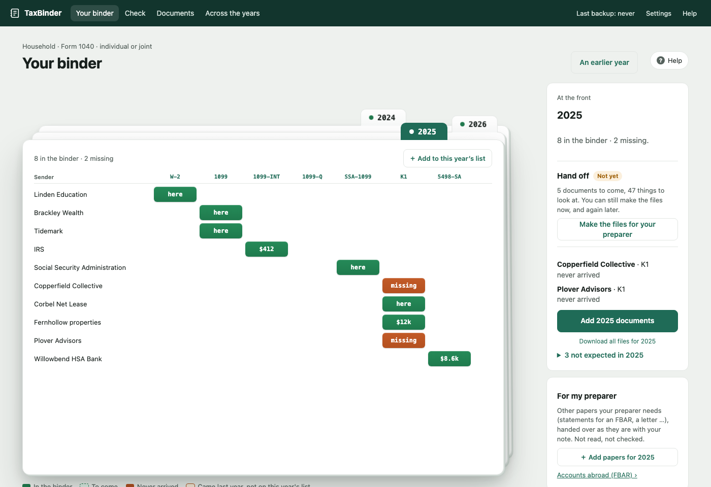

Your tax documents, in order.
TaxBinder is a free Mac app that knows which tax documents to expect each year, reads them as they arrive, checks them against each other, and puts together the files your tax preparer needs. Everything stays on your computer.
Download for Mac Apple Silicon · macOS 13 or later · what's new
An early version. It works, and it's still being tested by its first users. Keep your original documents, and tell us what goes wrong.

Knows what to expect
Each tax year is a card: who sends you what, and which documents are in, still to come or missing.
Reads what arrives
Drop in PDFs, scans or photos. Each is read on your Mac: what it is, who sent it, its tax year and key amounts. Anything unclear is asked, never guessed.
Checks it
Missing documents near the deadline, estimated payments, donation letters, foreign accounts, amounts that disagree, and where each return is.
Ready for your preparer
One .zip per year with the documents, payments, donations and a summary. TaxBinder never sends it anywhere: you do.
Private by design
- Your documents and everything read from them stay on your Mac, encrypted.
- No account, no cloud service, and no AI service on the internet. The optional AI model runs on your Mac (it needs 16 GB of memory; without it, TaxBinder reads by rules alone).
- Free and open source under the AGPL: anyone can check what it does.
Not tax advice. TaxBinder organises and checks documents. It doesn't prepare or file returns, and its checks can be wrong or out of date. Confirm anything that matters with a tax professional.